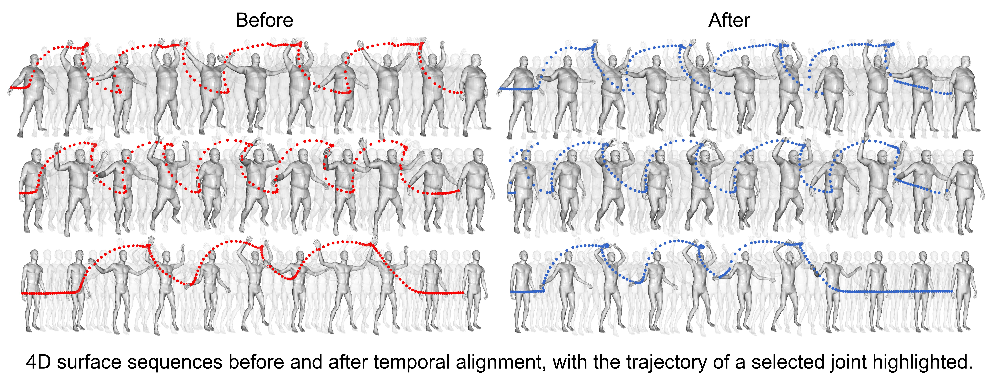
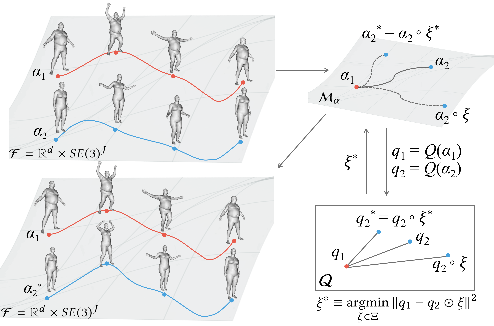

Overview
Temporal alignment pipeline mapping trajectories to SRVF space for rate-invariant curve matching.

Geodesic Artifacts
By decoupling bending from stretching, our framework avoids non-plausible artifacts that occur in SRNF-based methods.
Representation
A 4D surface is represented as a trajectory in the product space of shape and pose parameters.
Pairwise Registration
Temporal alignment is performed by mapping trajectories to SRVF space and computing optimal time-warping via Dynamic Programming.
Random Temporal Warping
Our method accurately recovers temporal alignment even when random temporal diffeomorphisms introduce visible phase shifts.
Geodesic
Our method yields natural deformations along geodesic paths, avoiding unnatural shrinkage artifacts that occur in other methods.
Co-registration
We simultaneously compute the mean motion and optimal time warpings to synchronize motion phases across multiple 4D surfaces.
PCA
After temporal co-registration, PCA reveals meaningful principal modes of variation that capture genuine motion variability.
Synthesis
Novel 4D surfaces are generated by sampling along principal modes of variation from the learned statistical model.